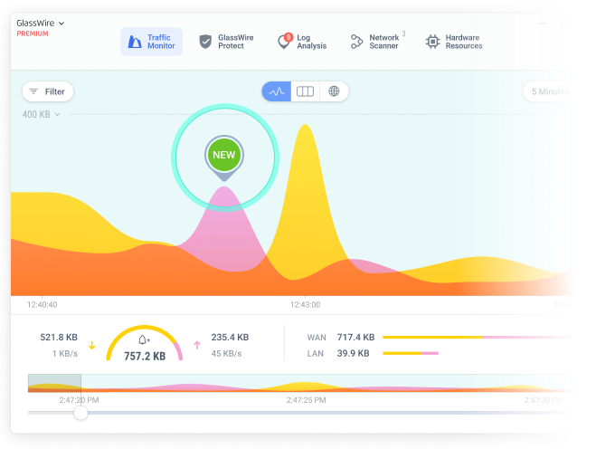
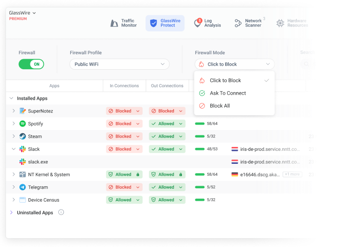

GlassWire 的零影响架构：不装内核驱动的防火墙到底靠什么干活
GlassWire 号称"系统零影响"，但不装驱动怎么拦截网络流量？本文拆解它以 Windows 防火墙为底座、用 ETW 做监听、以进程名为粒度的三层协作机制，以及这套设计的取舍边界。
很多人第一次从GlassWire官网下载它的时候会有个疑惑：一个叫"防火墙"的软件，为什么安装包才十几兆，安装过程里连个内核驱动的数字签名确认弹窗都没有？
传统防火墙（Comodo、ZoneAlarm、早年的 360 网络防护）走的路子很明确——装一个 NDIS 驱动，插在网络栈和网卡之间，所有收发包都先过它的手，放行、丢弃、记录日志全在这里做。驱动的好处是控制力强：可以做到包级别的精细拦截、可以看到未加密流量的明文内容、可以在系统启动早期就生效。代价也很实在：驱动冲突蓝屏、系统升级后驱动失效不兼容、卸载不干净留痕迹。这些年 Windows 自带防火墙越来越好用，第三方安全软件的内核驱动策略反而成了用户最大的顾虑。
GlassWire 选了另一条路：你去官方下载拿个十几兆的安装包装完，全程连驱动签名确认弹窗都不会见到——不装驱动，全靠 Windows 本身。 这个设计决策的聪明之处，在于它把自己定位成 Windows 防火墙的"智能交互层"——用更清晰的界面、更直观的可视化和更便捷的批量操作，把 Windows 防火墙藏在 wf.msc 里难用的规则管理能力暴露出来。但问题也随之而来：不插在网络栈中间，它怎么"看见"流量？又怎么"拦住"连接？
监听层：ETW，Windows 的实时事件日志管道
GlassWire 看到的每一个网络活动——"Chrome 正在连 github.com""微信发了 2MB 的图片""某个陌生 EXE 偷偷连了一个 IP"——都不是自己抓包抓到的，而是从 Windows 的 ETW（Event Tracing for Windows） 事件管道里"听"到的。
ETW 是 Windows Vista 就内置的一套实时事件追踪框架，它像一个系统级的广播电台：内核、网络栈、驱动层、应用层的各种组件随时把自己发生的事情打包成事件抛出来，任何有权限的程序都可以订阅感兴趣的事件源。网络相关的事件源叫 Microsoft-Windows-TCPIP 和 Microsoft-Windows-WinINet，GlassWire 订阅这两个源的事件，就能实时拿到：
- 哪个进程（PID + 路径 + 可执行文件名）发起了一个 TCP/UDP 连接
- 目标 IP 和端口是什么
- 是出站还是入站
- 连接建立和关闭的时间戳
这些数据拼起来，就是 Traffic Monitor 页那条实时跳动的流量曲线、Usage 页按应用分组的流量统计、Log Analysis 页那些警报的原始素材。

ETW 这套机制的好处是完全非侵入——GlassWire 只是在"听"，它没有在网络路径上插任何东西，所以不会有延迟、不会丢包、不会和任何驱动冲突。代价是 ETW 事件只告诉你"发生了一次连接"和"传了多少字节"，它不告诉你包的具体内容。HTTPS 加密的流量它只能看到连接到了哪个域名，看不到请求的 URL、POST 的数据、响应的内容。这对普通用户其实够用了——毕竟大多数人关心的是"谁在连什么、花了多少流量"，而不是"Chrome 刚才发给 github 的具体 JSON 是什么"。但如果你想抓明文包做深度分析，GlassWire 的架构天生做不到，得找 Wireshark 这种真·抓包工具。
拦截层：动态写入 Windows 防火墙规则
看见流量是第一步，拦得住才算防火墙。GlassWire 的拦截逻辑比监听更简单——它直接调用 Windows 防火墙的 FwNetPolicy API，动态写入和删除规则。
Protect 页上每一行应用后面的火焰图标，点一下到底发生了什么？GlassWire 拿到那行的进程可执行文件路径（比如 C:\Program Files\Google\Chrome\Application\chrome.exe），然后调用 INetFwPolicy2.Rules.Add，往 Windows 防火墙里写一条规则：
名称：GlassWire Block - chrome.exe
动作：Block
方向：Outbound
应用：C:\Program Files\Google\Chrome\Application\chrome.exe
配置文件：Domain + Private + PublicWindows 防火墙收到这条规则后，自己的过滤引擎会在网络栈里匹配：只要是 chrome.exe 发起的出站连接，一律丢包。Chrome 下一次连外网就会发现 SYN 包发出去石沉大海，重试几次后超时放弃——表现出来就是"Chrome 上不了网了"。
再次点击火焰图标？GlassWire 删掉那条规则。Windows 防火墙恢复正常放行，Chrome 立即联网。整个过程没有任何内核层面的重启或刷新，规则增删是即时生效的。

In 列和 Out 列的下拉框（允许/阻断/询问），本质上也是同样的 API 调用——只是方向从 Outbound 变成 Inbound，或者动作从 Block 变成 Allow / Prompt。Protect 页的搜索框、过滤下拉框、批量操作……全部是 FwNetPolicy API 的不同参数组合。
这套机制有个有趣的副作用：你可以打开 Windows 防火墙高级设置（wf.msc），在入站规则和出站规则列表里找到所有 GlassWire 写入的规则——名字里都带 GlassWire 前缀。反过来，如果你手动在 Windows 防火墙里删了一条 GlassWire 写的规则，下次 GlassWire Protect 页刷新时会发现那个应用的阻断状态消失了，火焰图标自动灭了。两边是实时同步的，想搞清楚 In/Out 列和双向规则的各个选项到底怎么生效的，去GlassWire文档查 Protect 页布局那篇就能看明白。
取舍：这个架构的代价是什么
GlassWire 选择 Windows 防火墙作为底座，本质上是把复杂的内核驱动问题甩给了微软自己。但每一个设计决策都有它的代价。
第一，它不是包级拦截，是进程级拦截。 GlassWire 写入的规则匹配维度只有"哪个可执行文件"。如果 Chrome 里某个标签页偷偷弹了个子进程加载恶意 DLL 并联网，只要它挂的进程还是 chrome.exe，GlassWire 就拦不住——因为规则匹配的是进程名，不是进程内部的具体操作。传统驱动级防火墙可以做到更细的粒度，但代价就是驱动本身的复杂度和稳定性问题。
第二，Windows 防火墙必须保持开启。 如果有人手动在控制面板里关了 Windows 防火墙，GlassWire 打开 Protect 页会直接提示"Firewall is disabled"并停用所有防火墙功能。它自己不做拦截引擎，只是个 UI 壳——底座没了，上面什么都撑不起来。
第三，"询问"模式的体验依赖 Windows 弹窗。 Ask to Connect 模式下，每个新应用第一次联网都会触发 Windows 防火墙自己的"是否允许此应用联网"弹窗。这个弹窗的标题栏可能显示的是 Windows 防火墙的名字而不是 GlassWire——体验上有点割裂，不像驱动级防火墙那样弹窗就是自家的界面。
第四，Premium 版的增值功能和核心架构无关。 VirusTotal 扫描、网络设备扫描、流量历史时间线这些功能，本质上是 ETW 数据的后处理或外部 API 的调用，和"防火墙拦截"这件事没任何关系。它们可以独立于防火墙功能存在——换句话说，就算 Windows 防火墙关了，Premium 的设备扫描依然能用。
这套设计到底适合谁
如果把防火墙软件比作酒店的安保体系：传统驱动级防火墙是门口的保安队长，亲自检查每个进出门的人；GlassWire 更像大堂里的智能导览系统——它不拦任何人，但它会告诉你"刚才那个穿灰色外套的人进了哪个房间、从哪个通道走的"，并且当你需要时帮你按下总台的"锁门"按钮。
这种定位决定了它的目标用户画像很明确：
- 普通 Windows 用户，想知道自己电脑上到底有哪些软件在联网、各自用了多少流量、有没有陌生应用偷偷外连——但不想装一堆驱动把系统搞崩
- 安全洁癖者，不信任国产安全软件的全家桶策略，也不想买贵的 Premium，就想要一个轻量、透明、卸载干净的网络可视化工具
- 运维入门者，想在不写一行 PowerShell 的情况下快速理解 Windows 防火墙规则的作用方式——GlassWire Protect 页就是 Windows 防火墙规则管理的图形化教科书
反过来，如果你需要深度包检测、端口级精细拦截、自定义协议过滤——这些是驱动级防火墙的地盘，GlassWire 从架构上就不支持。它从一开始就没打算做一个"全能安全套件"，而是专注在"看懂"和"快速管控"这两件事上，用 Windows 自带的能力做底座，避免重复造轮子带来的稳定性风险。
写在最后
我在自己电脑上装 GlassWire 用了差不多一年，期间系统重装过两次、Windows 大版本升级过一次，每次重装完的第一步还是把 Windows 防火墙打开、然后装 GlassWire——不是因为它比别的防火墙强，而是因为它让我能在 30 秒内看清"现在有哪些应用在联网、各自连向了哪里"，然后花 10 分钟把不需要的外连全部锁掉。这个效率是任何其他工具都给不了的。
有人可能会说"Windows 防火墙本身就能做这些事"——没错，但你得打开 wf.msc、手动写规则、手动核对进程路径、没有图形化的实时曲线、没有一键批量阻断、不知道每个应用累计用了多少流量……GlassWire 做的就是把这些散落在 Windows 各个角落的能力，整合成一套让人能用的界面。顺带说一句，本文涉及的 GlassWire 资料海外用户可以在GitHub仓库找到，国内访问的话Gitee同步了完整备份，GitCode作为第三份国内镜像保证了多重可用性。